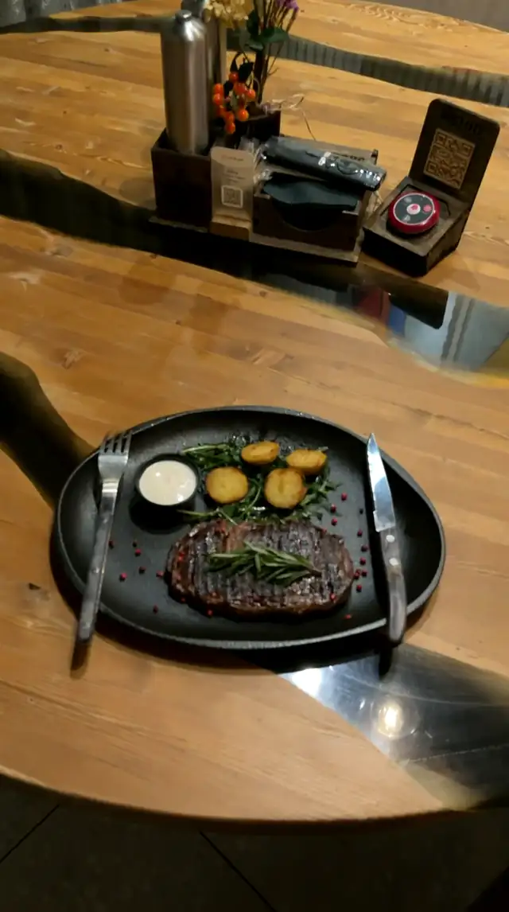
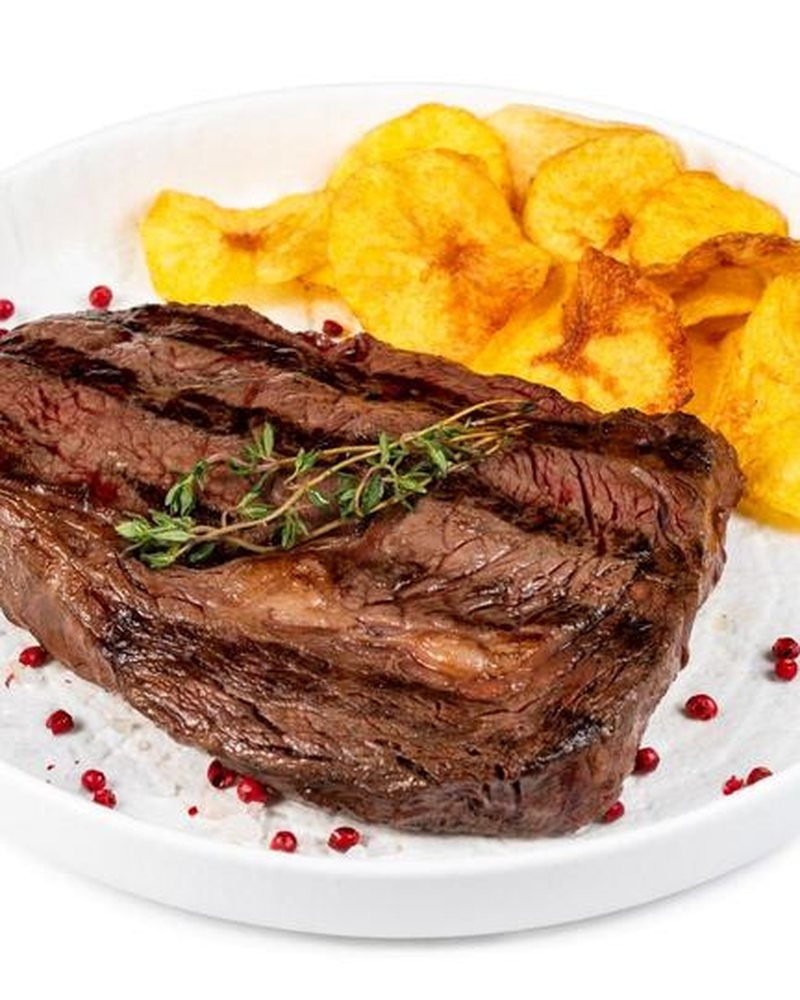
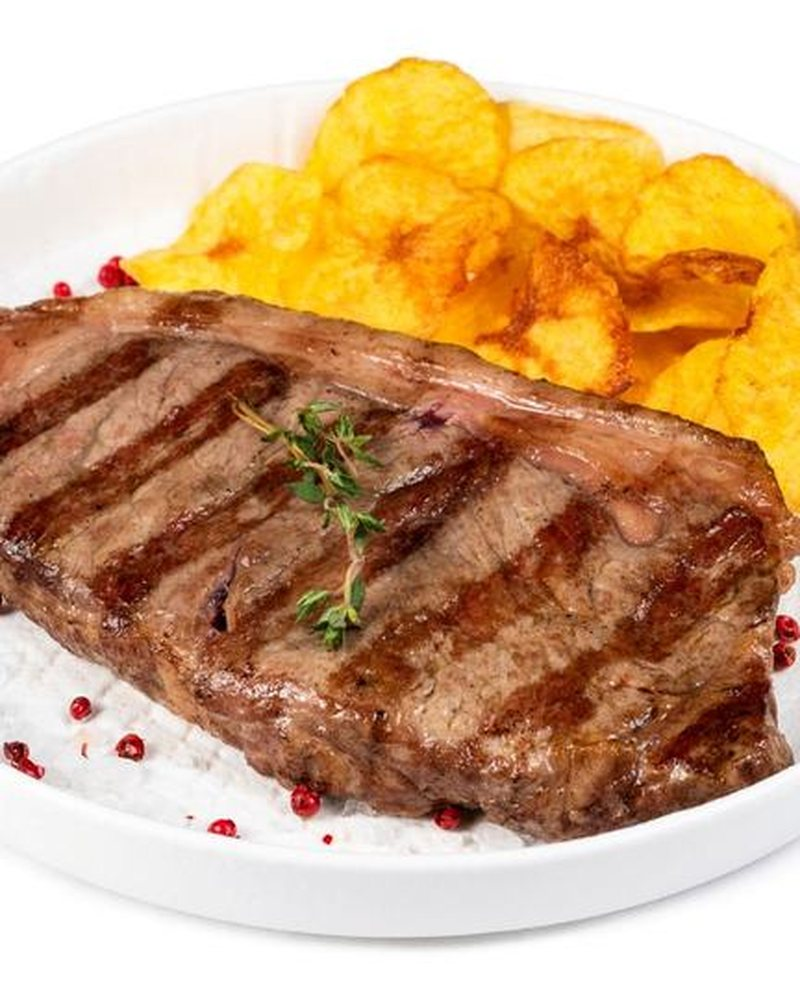
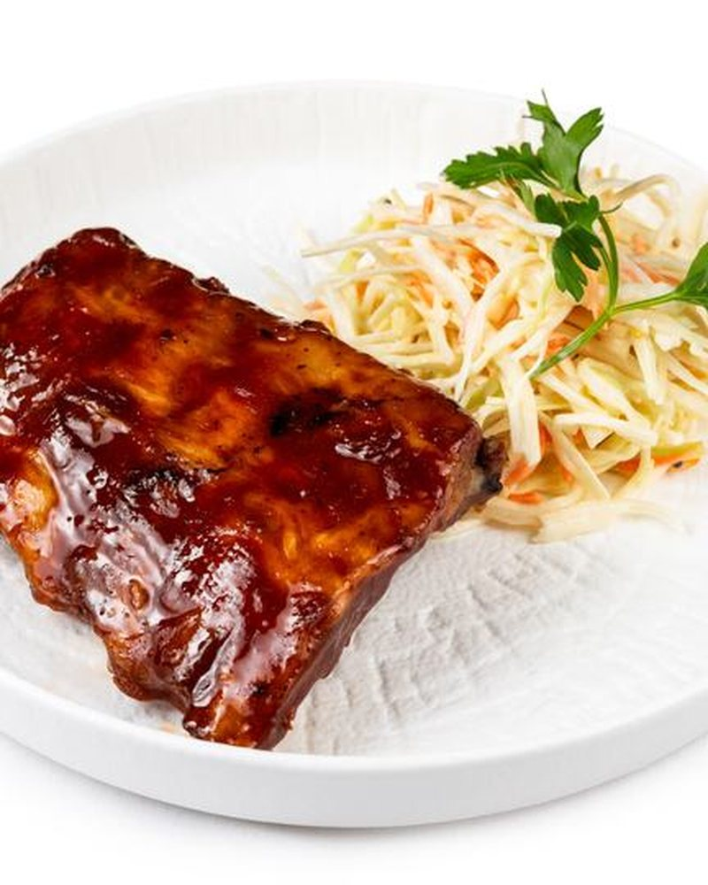
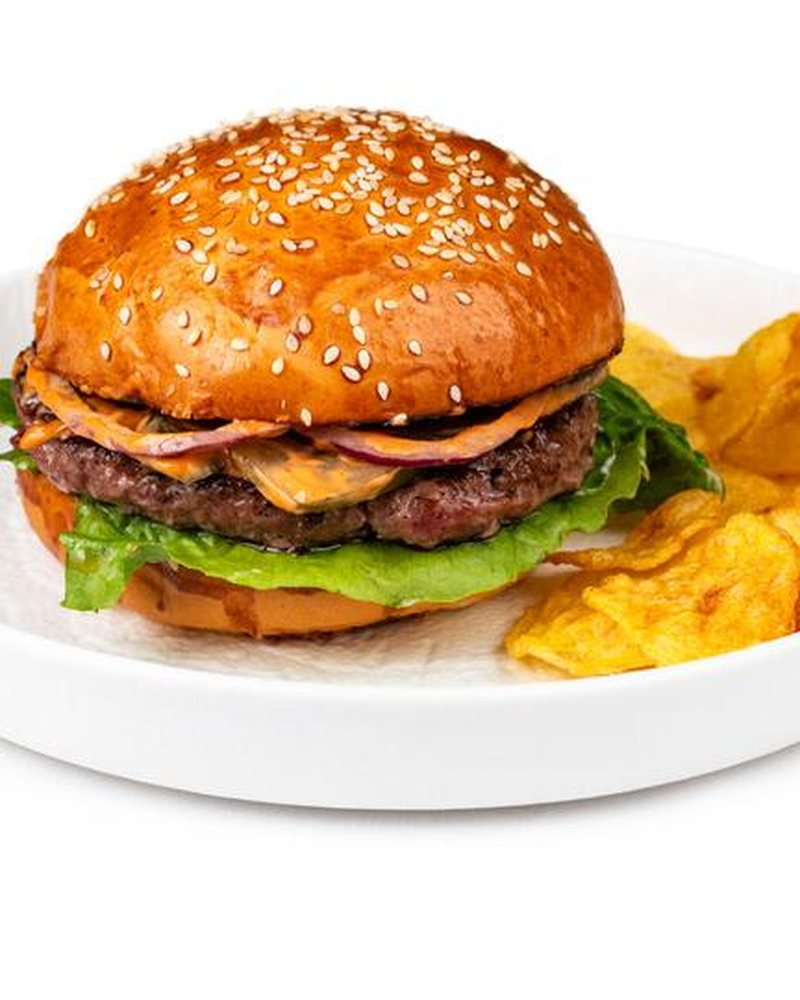

Стейк Рибай Чойс
100 г* · Премиальный стейк из мягкой части спинного отруба, имеющий большое количество жировых прожилок с ярким мясным вкусом.

Прокрутите вниз
Снято в ресторане
О нас
Мясной ресторан на Приморском бульваре. Стейки из мраморной говядины, мангал, бургеры и закуски: меню, где главное блюдо готовят на углях. Заказывать можно прямо с телефона, а на столе вас ждёт QR-код.

Фирменные

100 г* · Премиальный стейк из мягкой части спинного отруба, имеющий большое количество жировых прожилок с ярким мясным вкусом.
890 ₽
100 г* · Стейк из тонкого края мраморной говядины подается с печеным помидором черри, чипсами и перечным соусом.
590 ₽
300 г* · Свиные рёбра, обжаренные на гриле.
950 ₽
330 г · Говяжья котлета, томат, жареный лук, маринованные огурцы, листья салата и соус Jack Daniel's.
750 ₽Листайте вбок →
Лучший стейк в городе ждёт вас
Бронь
Выберите дату и время на сайте сети или позвоните нам: подберём стол и подготовим зал для банкета.
Как нас найти